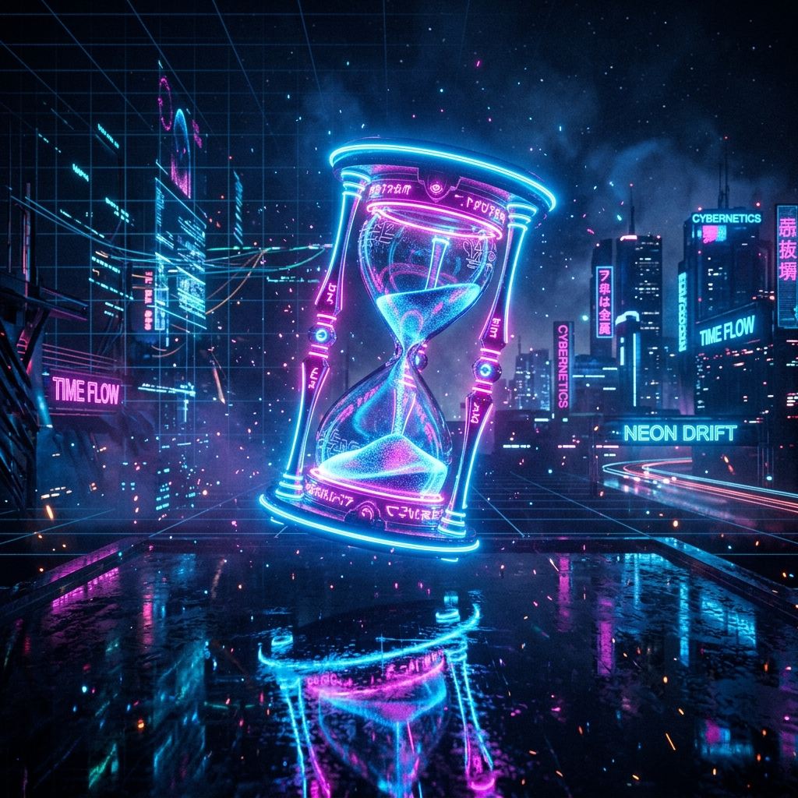

PRISIONEROS DE LA MENTE.
ESCLAVOS DEL RELOJ.
"Somos prisioneros de una realidad que nuestro propio cerebro inventa. Si no la cuestionas, jamás serás libre."
4.000 SEMANAS Y CHAO.
El reloj corre en background. Damas y caballeros, ¿en qué weá están gastando su tiempo?
Si vivimos unos 80 años, ese es nuestro presupuesto total. No hay vidas extras. El tiempo avanza rápido y nosotros andamos en piloto automático, preocupados de puras leseras. ¿De verdad vas a dejar que se te vaya la vida así de simple?
"No es que tengamos poco tiempo, sino que perdemos mucho." — Séneca

EL NARRADOR INTRUSO.
Esa vocecita en tu cabeza que no se calla nunca... ¿De verdad eres tú o es un impostor pasándose rollos?
¿Por qué le creemos todo a esa voz que nos dice que somos malos para esto, que nos va a ir mal, o que se pasa películas con lo que piensan los demás? Pasamos más tiempo escuchando el comentario del cerebro que viviendo la realidad.
"Pasamos la vida entera resolviendo problemas que nosotros mismos inventamos." — Proverbio Zen
> run analisis_rollo.exe
[WARNING] Memoria de sobrepensar saturada (99.8%)
Escaneando pensamientos...
ERROR: Bucle de inseguridad ("La voy a cagar")
ERROR: Rollo innecesario ("¿Qué van a pensar de mí?")
Recomendación: Mandar el ego a la chucha...
_RECUERDOS EDITADOS.
Tu cerebro te edita el pasado para justificarte los miedos de hoy. Brígido.
No guardamos videos, guardamos cuentos que se modifican con nuestro estado de ánimo actual. ¿Por qué dos amigos recuerdan el mismo carrete de formas tan distintas? ¿Tiene sentido amargarse hoy por una historia que tu mente inventó a su pinta?
LA TRAMPA DEL "CUANDO...".
"Cuando tenga la tremenda pega, cuando tenga plata, ahí voy a ser feliz"... Tremendo chamullo.
Actuamos como si nos quedaran vidas infinitas. El narrador te convence de posponer la felicidad para un mañana que se corre todos los días. Si no estás presente hoy, ¿cuándo crees que vas a empezar a vivir?
"El mañana es solo un concepto. El único lugar donde existes es aquí y ahora." — Alan Watts
[PENDIENTE] pasarlo_bien.exe - Estado: PAUSADO
[CORRIENDO] conseguir_lucas.sh - Bucle: Infinito
[CORRIENDO] estresarse_por_el_mañana.exe - CPU: 95%
[BLOQUEADO] disfrutar_el_ahora.pkg - Requiere: 'tiempo_libre' (NO ENCONTRADO)
_LA MÁSCARA DIGITAL.
Armamos el tremendo perfil en Instagram para ocultar que por dentro tenemos la tremenda ensalada de cables.
¿Quién eres cuando apagas el celular y no hay nadie mirando? ¿Te gusta esa persona o te da miedo quedarte a solas en tu pieza en silencio? Nos obsesionamos tanto con el avatar que terminamos olvidando al usuario.
WEÁS QUE NOS QUITAN VIDA.
Tacos, mails de la pega, peleas tontas... Si supieras cuánta batería de vida te queda, ¿la gastarías en eso?
Desperdiciamos energía en procesos inútiles. El orgullo de tener la razón en una discusión de WhatsApp, la rabia contra un chofer o el miedo al qué dirán. Son fugas de recursos en un sistema que tiene fecha de expiración.
EL REBOOT FINAL.
Frente a la muerte, todas las trancas y el ego valen hongo. Es la verdad más pura y liberadora.
Saber que nos vamos a morir no es para deprimirse; es el hack supremo. Borra al instante las preocupaciones tontas, el miedo a equivocarse y el orgullo, dejándote libre para lo que de verdad importa.
"Podrías dejar la vida ahora mismo. Deja que eso determine lo que haces, dices y piensas." — Marco Aurelio
> purge --tonteras
ELIMINANDO: Preocupaciones de ego... COMPLETADO
ELIMINANDO: Ansiedad social / Miedos... COMPLETADO
ELIMINANDO: Rencores tontos... COMPLETADO
ESTADO: Claridad recuperada. Valor del presente: MÁXIMO.
_CONVERSACIÓN BRÍGIDA.
Apaga la pantalla un momento. Hablemos al hueso, sin rodeos.
¿Cuál es el cuento más grande que te estás vendiendo a ti mismo hoy en día para no hacer lo que realmente quieres?
Si supieras que te quedan exactamente 52 semanas de vida (un año), ¿con quién de esta mesa dejarías de hablar, y a quién le dirías lo que realmente sientes?
¿Qué es lo más valioso que has perdido por culpa del orgullo o del miedo al qué dirán, y cómo te pesa hoy?
CORTA EL ROLLO.
La mente quiere respuestas. El tiempo solo quiere pasar. Tu vida no es una novela que tienes que escribir; es un destello breve entre dos eternidades oscuras.
THE END
"El amor es lo único que somos capaces de percibir que trasciende las dimensiones del tiempo y el espacio."
— Interstellar (2014)